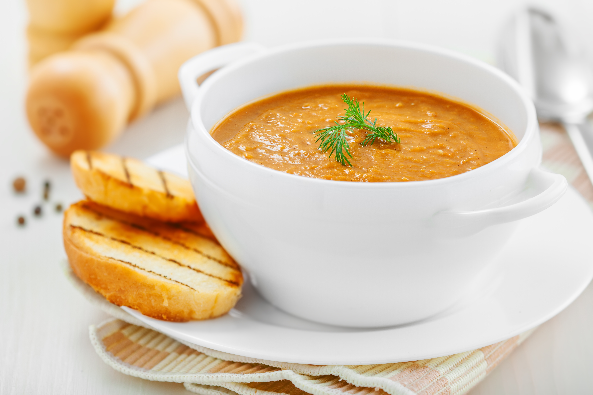

Carrot Soup

Carrot and Ginger Soup
Quick, easy and mouthwateringly good. This carrot and ginger soup is perfect for chilly afternoons
Ingredients
- 1 tsp rapeseed oil
- 1 small onion
- 1 garlic clove, finely chopped
- 20g root ginger
- 200g carrots
- 300ml vegetable stock
- freshly ground black pepper
- 1 spring onion
Steps
- Heat the oil in small saucepan over a medium heat. Add the onion and cook for 2–3 minutes. Add the garlic, ginger and carrots and cook for 5 minutes, stirring occasionally.
- Add the stock and season with pepper to taste. Bring to the boil, then reduce the heat, cover and simmer for 20 minutes, or until the carrots are soft.
- Pour the soup into a food processor and blend until smooth. Return to the pan and reheat gently.
- To serve, pour the soup into a warm serving bowl and garnish with the spring onions.
Home